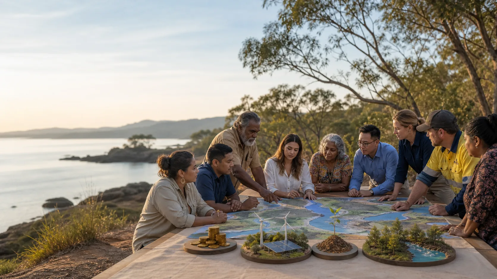

Native Title
Native Title is Australian law recognising that First Nations rights and interests in land and waters can still exist because of continuing connection to Country.

Native Title, agreements, co-ownership
The question is not only "How much money?" It is also "Who has authority, who owns, who cares for Country, and what survives seven generations?"
Plain terms
Native Title is Australian law recognising that First Nations rights and interests in land and waters can still exist because of continuing connection to Country.
An Indigenous Land Use Agreement is a voluntary agreement about how land or waters can be used and managed. People often shorten it to ILUA.
A Prescribed Body Corporate, often called a PBC, is the legal front door that holds or manages Native Title rights for the native title holders after a determination.
The deal spectrum
People are told and asked. This can be thin or deep. The important test is whether people have time, plain information, and real power to say no or change the plan.
Money is paid because a resource, place, or permission is being used. Royalties can help now, but they can disappear when extraction ends.
Some money is locked away so the main pot can grow. This helps avoid the "big payment, empty cupboard later" problem.
The community or Traditional Owner entity owns part of the project. This may bring a board seat, long-term upside, and stronger say over direction.
Country is not only a project site. Co-management means care, monitoring, cultural authority, restoration, and decisions about what stays untouched.
The seven-generation test
Before a deal is signed, one plain question belongs on the table: do our choices today bring hope and practical optimism into our families, classrooms and streets, or do they leave people more anxious, divided, watched, priced out, or dependent?
The children now in primary school will one day read the records, walk the streets, pay the bills, inherit the waters, and live inside the systems we built. They may not ask whether we used impressive words. They may ask whether we chose clean energy that served local people, food systems that made life steadier, health care that reached families early, insurance that rewarded prevention, wealth that stayed rooted, trusted local knowledge, and a better quality of life.
Future generations may look back and ask whether Country was treated as a living authority or a backdrop, whether data became a leash or a key, and whether abundance meant extraction for a few or enough dignity for many. The seven-generation lens does not force one answer on every community. It invites each community to put time, consequence and care in the room before the money gets loud.
Self-sovereignty at every scale
A fractal is a shape where the same pattern appears at different sizes, like a shoreline seen from the sky and then again in a handful of sand. This project uses that idea in plain human terms: the dignity we want for a person can also guide a home, a street, a community, an island, a region and a future fund.
A person can hold their time, body, story, data, money, care choices and consent with more dignity.
A household can strengthen food, health, energy, repairs, digital keys, safety records and everyday resilience.
A community can grow local media, clean energy, mutual insurance, shared tools, care ledgers, local intelligence and trusted meeting places.
Country-led agreements can connect consent, co-ownership, future wealth, ecological repair and better law into one living pattern.
Respectful ground
This page can hold questions, compare public models, and help everyday people arrive better prepared. It does not claim to speak for Quandamooka people, native title holders, Elders, a Prescribed Body Corporate, or any local organisation.
That is not a small-print escape hatch. It is part of the design. Self-sovereignty means the people with authority are not treated as decoration after the plan is already written. For Minjerribah and the surrounding waters, serious proposals begin by asking who holds the proper authority, what process they choose, what knowledge can be shared, what stays protected, and what kind of future their children may inherit.